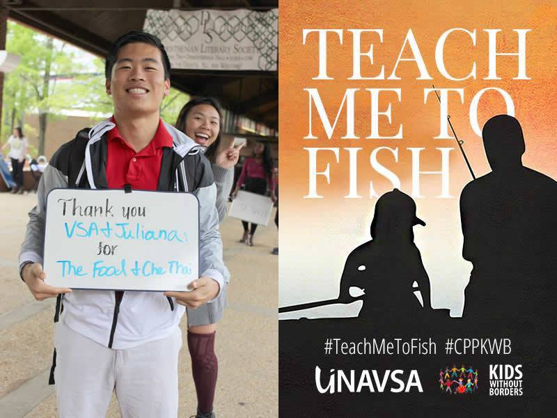

My Life Changing decisionLiving in an area of familiarity can make one comfortable and not excited about change. For me that was not the case. As a senior at Islands High School in Savannah, I did not want to conform with everyone else and attend a local university or Georgia Southern just an hour down I-16. I wanted to break out of my shell and venture out into the unknown world. It was not that I was unhappy where I was but I knew that being close to home would not allow me to achieve my goals. My senior year, I decided to apply to the University of Georgia and I got accepted. At first I was scared and nervous, but also excited. All my years of hardwork had led up to this very moment. Looking back now, it was the greatest decision of my life. I have encountered the most amazing people in this world and experienced unimaginable wonders. As well as overcame many hardships and challenges. I am proud to be apart of the the Bulldawg Nation. I am proud to be a student of the University of GeorgiaFollow my journey at https://www.instagram.com/_andyni/?hl=en |
 |